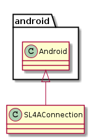

An SL4a connection communicates with an Android device.

| SL4AConnection | |
| SL4AConnection.__getattr__ | |
| SL4AConnection.check_error |
<<name=’SL4AConnection’, echo=False>>+ class SL4AConnection(android.Android):
“”” Adapter to the SL4A class to behave like the other connections “”” def __init__(self, *args, **kwargs):
- def __getattr__(self, method):
“”” :param:
- method: The name of an SL4a method
return: Whatever result.result is raise: CommandError if result.error is not None raise: ConnectionError if the SL4a server returns an error. “”” def rpc_call(*args):
- try:
- result = self._rpc(method, *args)
- except ValueError as error:
- self.logger.error(error) raise ConnectionError(“Unable to connect to the SL4a server. Check your connection.”)
- if result.error is not None:
- self.check_error(result.error, method)
return result.result
return rpc_call
- def check_error(self, error, method):
“”” Checks the result for errors “”” if error.startswith(‘com.googlecode.android_scripting.rpc.RpcError:’):
- if error.endswith(“Unkown RPC.”):
- raise CommandError(“Unknown SL4a Command: ” + method)
- else:
- message = error.split(”:”, 1)[-1] raise CommandError(“SL4a command error: {0}({1}) ”.format(method,message))
- else:
- raise CommandError(error)
return
# end class SL4aConnection